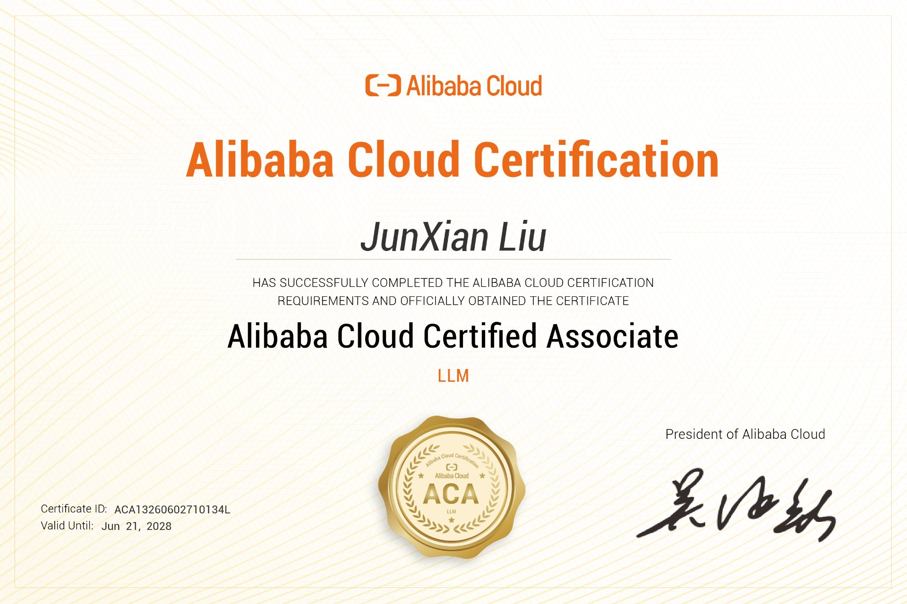
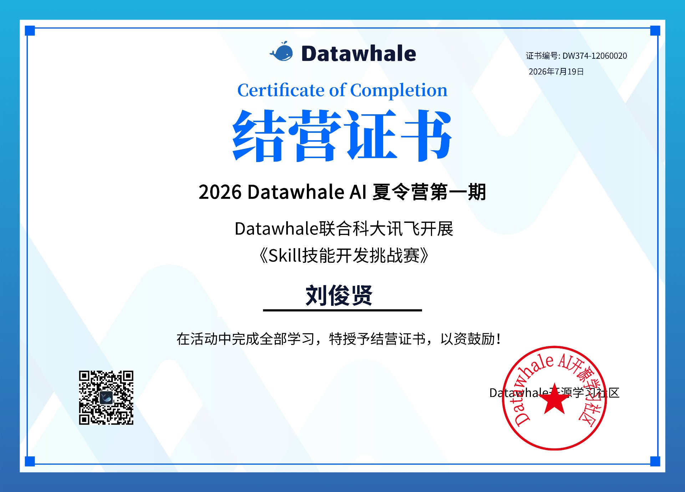
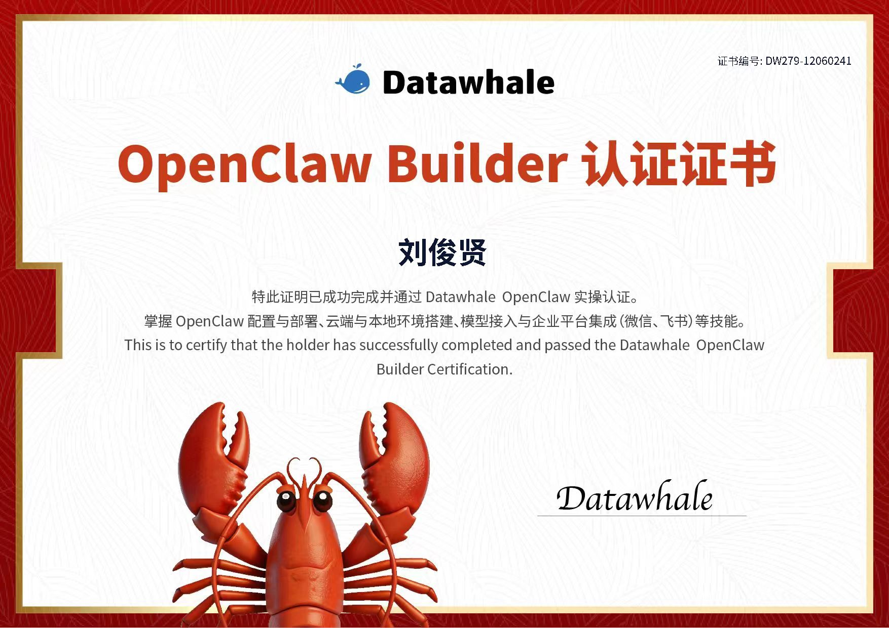

依靠代码探索世界，用诗歌展现人文关怀
深圳信息职业技术大学 · 工业互联网专业学生。
我相信代码不只是冰冷的符号，也可以是有温度的表达。 技术不是用来炫技的，而是解决真实问题的。让科技服务于人，让科技造福于人。
梦开始的地方，是大一下学期的一堂 Python 课。我的老师黄绍霖随口提了一句有关 OpenClaw 的事， 我便一头扎进了这个未知的领域。他不仅是我的引路人，更是我在技术和精神上最重要的支撑。 对我而言，绍霖老师既是专业课老师，也是能一起交流技术的朋友。
起初我并没有接触 RAG，而是在不断摸索 OpenClaw。光是本地部署就折腾了四天， API 限流、网关配置、安全风控……问题一个接一个。在 AI 的协助下，三月中旬我开始了 AI Agent 工作流的尝试， 随后做出了人生第一个项目——OpenClaw Stock Assistant。 虽然技术含金量不算高，但它代表着我在未知领域里的一次大胆探索， 也是敢于追赶科技潮流的第一次尝试。
后来机缘巧合接触到 RAG（检索增强生成）技术，抱着试试看的心态开启了新的征程。 经过一个半月的啃文档、踩坑、调参，产出了第二个项目 RAG-Skeleton。 在这个过程中，我学会了如何驾驭 AI，让它真正成为我的生产力工具。 视野也不再局限在学校——借助绍霖老师的推荐，我参加了字节跳动的 OpenClaw 交流会议、 腾讯云的技术沙龙等线下活动，见到了更广阔的天地。
RAG-Skeleton：通用 AI 知识库骨架，丢进什么文档就是什么助手。 已支持混合检索、Reranker 精排、Ollama 离线运行、Docker 一键部署。
ACA 认证：已获得阿里云大模型工程师 ACA（LLM 方向）认证（2026.06 - 2028.06）。

Alibaba Cloud Certified Associate — LLM

Datawhale AI 夏令营第一期 · Skill 技能开发挑战赛

Datawhale OpenClaw Builder 认证
我特别想感谢我的父母。在我开发的日子里，面对自我迷茫和对问题的困惑时， 是他们给了我直面问题的勇气。没有家人的托举，我根本不可能见到如此广阔的天地。